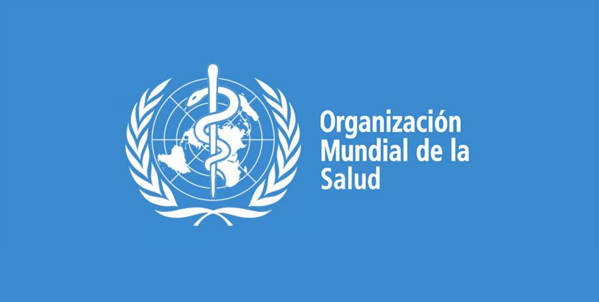

Tener una mente saludable
En este artículo podrás leer los consejos que la OMS ofrece para estar mentalmente saludables
En este artículo podrás leer los consejos que la OMS ofrece para estar mentalmente saludables
La Asociación para la Salud Integral del Enfermo Mental (ASIEM) lleva 23 años luchando por las personas que sufren esquizofrenia, bipolaridad, psicosis o trastornos de la personalidad
El 30% de la población ha tenido una crisis de pánico alguna vez, pero muchas personas no saben reconocerla
Un estudio basado en 589.255 llamadas relacionadas con suicidio de menores alerta de que los principales desencadenantes son la violencia y los problemas de salud mental
Se estiman más de ocho millones de personas con VIH mayores de 50 años, que pueden sufrir un envejecimiento prematuro y más problemas neurológicos y de salud mental